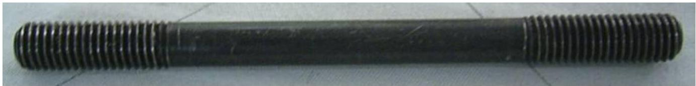
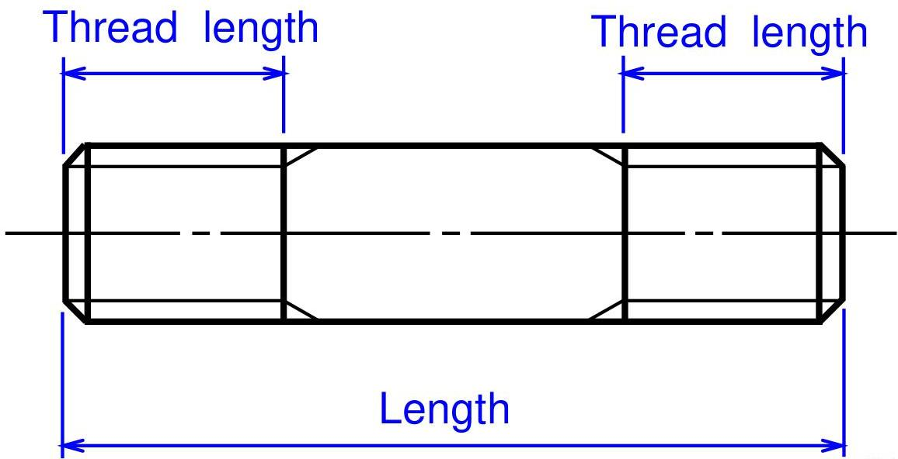
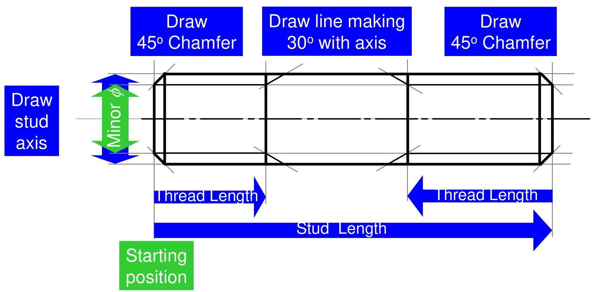
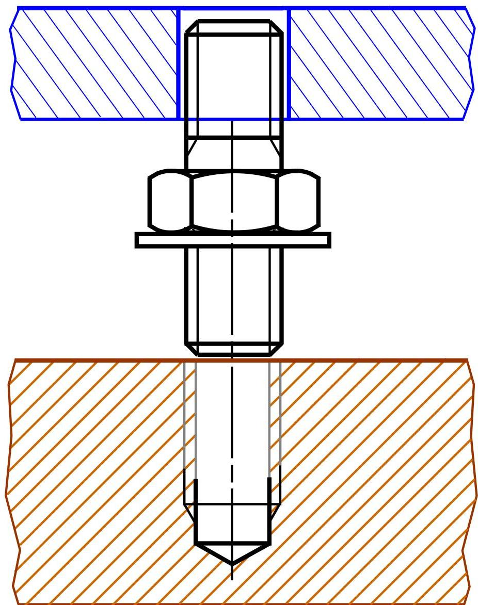
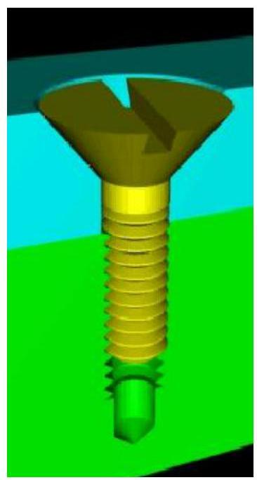
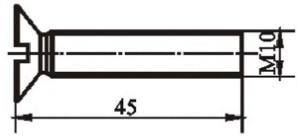
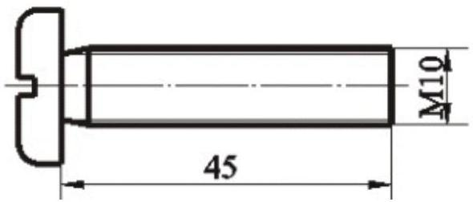
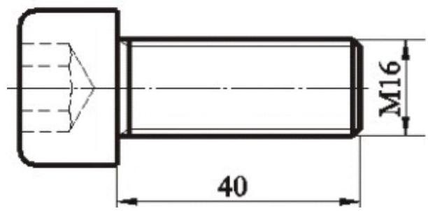

🔩
Topic 10
Drawing of Stud & Screws
01
Drawing of Stud
Terminology
Stud is a headless bolt, threaded at both ends.


When to use a Stud?
In threaded fastening if one of the connected pieces is too thick, or in case the bolt fastening is not suitable or the connected pieces need be taken apart frequently, then the studs are used.
Drawing Steps

Application Steps
The sequence of operations to fasten parts using a stud:
- 1 Drill a hole.
- 2 Tap a hole.
- 3 Screw a stud.
- 4 Place the part to be fastened.
- 5 Insert washer and fastened a nut.

02
Cap Screws and Set Screws
Similar to the stud fastening, cap screws are used for fastening two pieces together by passing through a clearance hole in one and screwing into a tapped hole in the other.
Types of Screws




Set Screws
Additional types of set screws and their heads.
Drafting Note
Note that the slot on screw head is generally drawn at $45^{\circ}$ with the horizontal center line in the top view.